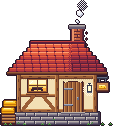
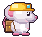
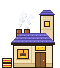
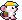
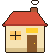
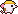

<meta charset="utf-8">
<meta name="viewport" content="width=device-width, initial-scale=1, viewport-fit=cover">
<title>Pixel Art Styles</title>
<link rel="stylesheet" href="https://fonts.googleapis.com/css2?family=Press+Start+2P&family=Inter:wght@400;600;700&display=swap">
<style>
:root { color-scheme: dark; --bg: #120f18; --panel: #2a2338; --line: #3b3350; --text: #f1edf8; --muted: #a9a1c2; --gold: #ffcf2e; --new: #46ef6c; }
* { box-sizing: border-box; }
body { margin: 0; padding: 0 16px 48px; background: var(--bg); color: var(--text); font-family: Inter, system-ui, sans-serif; }
main { max-width: 1100px; margin: 0 auto; }
.px { image-rendering: pixelated; display: block; }
.big img { flex: none; }
h1 { margin: 24px 0 6px; font-family: 'Press Start 2P', monospace; font-size: 15px; line-height: 1.5; color: var(--gold); }
.lead { margin: 0 0 18px; max-width: 72ch; color: var(--muted); font-size: 14px; line-height: 1.55; }
h2 { margin: 32px 0 10px; font-size: 17px; }
.cols { display: grid; gap: 12px; }
.card { display: grid; grid-template-columns: minmax(0, 1.35fr) minmax(0, 1fr); grid-template-areas: "h h" "big side"; gap: 12px 16px; padding: 14px; background: var(--panel); border: 1px solid var(--line); border-radius: 10px; min-width: 0; }
.card h3 { grid-area: h; margin: 0; font-size: 15px; }
.side { grid-area: side; display: flex; flex-direction: column; gap: 12px; min-width: 0; }
@media (max-width: 760px) { .card { grid-template-columns: minmax(0, 1fr); grid-template-areas: "h" "big" "side"; } }
.card h3 small { display: block; margin-top: 3px; font-size: 12px; font-weight: 400; color: var(--muted); }
.big { grid-area: big; min-width: 0; overflow: hidden; display: flex; align-items: flex-end; justify-content: center; gap: 14px; height: 300px; padding: 10px; background: #120e18; border-radius: 8px; border-bottom: 3px solid #4fc234; }
.card ul { margin: 0; padding-left: 18px; font-size: 13px; line-height: 1.55; color: #dcd6ea; }
.card ul b { color: var(--text); }
.stage { position: relative; height: 150px; overflow: hidden; border-radius: 8px;
  background: linear-gradient(#78c8f0 0 52%, #8fcf6a 52% 82%, #4fc234 82% 85%, #7a4a2a 85%); }
.stage img { position: absolute; bottom: 15%; }
.cap { margin: -6px 0 0; font-size: 12px; color: var(--muted); }
.verdict { margin-top: 28px; padding: 14px 16px; background: var(--panel); border: 1px solid var(--line); border-left: 3px solid var(--gold); border-radius: 8px; font-size: 14px; line-height: 1.6; max-width: 90ch; }
.verdict p { margin: 0 0 8px; } .verdict p:last-child { margin: 0; }
@media (max-width: 760px) { .big { height: 190px; } .big img { zoom: .6; } }
</style>
<main>
  <h1>Estilos de pixel art</h1>
  <p class="lead">La quesería y el ratón minero en tres niveles de acabado, de más trabajado a menos. Arriba, ampliados para ver el píxel; abajo, al tamaño que ocuparían en la pantalla del móvil. Nada de esto está en el juego.</p>

  <div class="cols">
    <section class="card">
      <h3>1 · Detallado<small>Doble resolución</small></h3>
      <div class="big"></div>
      <div class="side"><ul>
        <li><b>4–5 tonos por material</b>, con sombras que tiran a morado y luces cálidas.</li>
        <li><b>Texturas con causa:</b> tejas con festón, ladrillo, vetas de madera, piedra al tresbolillo, musgo.</li>
        <li><b>Luz que tiñe:</b> el farol y la ventana aclaran la pared.</li>
        <li><b>Coste:</b> alto. La escena pasaría de 160 a 320 px de ancho y todo (edificios, ratones, rocas, iconos) tendría que subir al mismo nivel para no desentonar.</li>
      </ul>
      <div class="stage"></div>
      <p class="cap">En pantalla: mismo tamaño que los otros, píxeles a la mitad.</p></div>
    </section>

    <section class="card">
      <h3>2 · Pulido<small>Resolución actual · el de los tests</small></h3>
      <div class="big"></div>
      <div class="side"><ul>
        <li><b>3 tonos por material</b> y contorno oscuro.</li>
        <li><b>Volumen limpio</b>, sin textura: luz arriba, sombra abajo, algún remache o teja.</li>
        <li><b>Coste:</b> medio. Cabe en la escena de hoy sin tocar la resolución y se puede seguir dibujando por código.</li>
      </ul>
      <div class="stage"></div>
      <p class="cap">En pantalla: cada píxel del arte a 2 px.</p></div>
    </section>

    <section class="card">
      <h3>3 · Sencillo<small>Resolución actual · plano</small></h3>
      <div class="big"></div>
      <div class="side"><ul>
        <li><b>2 tonos por material</b>, contorno grueso, formas de icono.</li>
        <li><b>Máxima lectura</b> en un móvil pequeño; poco encanto de cerca.</li>
        <li><b>Coste:</b> bajo. Muy fácil de mantener y de ampliar con piezas nuevas.</li>
      </ul>
      <div class="stage"></div>
      <p class="cap">En pantalla: cada píxel del arte a 2 px.</p></div>
    </section>
  </div>

  <div class="verdict">
    <p><b>Mi recomendación: el 2 como base, con dos cosas del 1.</b> Las sombras que tiran a morado y las texturas con causa (tejas, ladrillo, madera) dan mucho carácter y no obligan a doblar la resolución. El 1 completo es el que más luce, pero cambia toda la escena y multiplica el trabajo de cada pieza nueva; el 3 es el más barato, pero se queda cerca de lo que ya tienes y no te convencía.</p>
    <p>Fuente: <code>exploracion/pixel/styles.px.js</code> (1 y 3), <code>buildings.px.js</code> y <code>anims.px.js</code> (2).</p>
  </div>
</main>
